The theory of sets was invented as a foundation for all of mathematics. The notion of sets and functions serves as a basis on which to build intuition about categories in general. This chapter gives examples of sets and functions and then discusses commutative diagrams. Ologs are then introduced, allowing us to use the language of category theory to speak about real world concepts. All this material is basic set theory, but it can also be taken as an investigation of the category of sets, which is denoted Set. People have always found it useful to put things into bins. 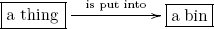 The study of sets is the study of things in bins. You probably have an innate understanding of what a set is. We can think of a set X as a collection of elements x ∈ X, each of which is recognizable as being in X and such that for each pair of named elements x, x′ ∈ X we can tell if x = x′ or not.1 The set of pendulums is the collection of things we agree to call pendulums, each of which is recognizable as being a pendulum, and for any two people pointing at pendulums we can tell if they’re pointing at the same pendulum or not. Notation 2.1.1.1. The symbol ∅ denotes the set with no elements (see Figure 2.1), which can also be written as { }. The symbol ℕ denotes the set of natural numbers: The symbol ℤ denotes the set of integers, which contains both the natural numbers and their negatives, If A and B are sets, we say that A is a subset of B, and write A ⊆ B, if every element of A is an element of B. So we have ℕ ⊆ ℤ. Checking the definition, one sees that for any set A, we have (perhaps uninteresting) subsets ∅ ⊆ A and A ⊆ A. We can use set-builder notation to denote subsets. For example, the set of even integers can be written {n ∈ ℤ | n is even}. The set of integers greater than 2 can be written in many ways, such as The symbol ∃ means “there exists.” So we could write the set of even integers as The symbol ∃! means “there exists a unique.” So the statement “∃!x ∈ ℝ such that x2 = 0” means that there is one and only one number whose square is 0. Finally, the symbol ∀ means “for all.” So the statement “∀m ∈ ℕ ∃n ∈ ℕ such that m < n” means that for every number there is a bigger one. As you may have noticed in defining ℕ and ℤ in (2.1) and (2.2), we use the colon-equals notation “A ≔ XY Z” to mean something like “define A to be XY Z.” That is, a colon-equals declaration does not denote a fact of nature (like 2 + 2 = 4) but a choice of the writer. We also often discuss a certain set with one element, denoted {☺}, as well as the familiar set of real numbers, ℝ, and some variants such as ℝ⩾0 ≔ {x ∈ ℝ | x ⩾ 0}. Exercise 2.1.1.2. Let A ≔ {1, 2, 3}. What are all the subsets of A? Hint: There are eight. A set can have other sets as elements. For example, the set has three elements, each of which is a set. If X and Y are sets, then a function f from X to Y, denoted f : X → Y, is a mapping that sends each element x ∈ X to an element of Y, denoted f(x) ∈ Y. We call X the domain of the function f, and we call Y the codomain of f. Note that for every element x ∈ X, there is exactly one arrow emanating from x, but for an element y ∈ Y, there can be several arrows pointing to y, or there can be no arrows pointing to y (see Figure 2.2). Slogan 2.1.2.1. Given a function f : X → Y, we think of X as a set of things, and Y as a set of bins. The function tells us in which bin to put each thing. Application 2.1.2.2. In studying the mechanics of materials, one wishes to know how a material responds to tension. For example, a rubber band responds to tension differently than a spring does. To each material we can associate a force-extension curve, recording how much force the material carries when extended to various lengths. Once we fix a methodology for performing experiments, finding a material’s force-extension curve would ideally constitute a function from the set of materials to the set of curves. Exercise 2.1.2.3. Here is a simplified account of how the brain receives light. The eye contains about 100 million photoreceptor (PR) cells. Each connects to a retinal ganglion (RG) cell. No PR cell connects to two different RG cells, but usually many PR cells can attach to a single RG cell. Let PR denote the set of photoreceptor cells, and let RG denote the set of retinal ganglion cells. a. According to the above account, does the connection pattern constitute a function RG → PR, a function PR → RG, or neither one? b. Would you guess that the connection pattern that exists between other areas of the brain are function-like? Justify your answer. Example 2.1.2.4. Suppose that X is a set and X′ ⊆ X is a subset. Then we can consider the function X′ → X given by sending every element of X′ to “itself” as an element of X. For example, if X = {a, b, c, d, e, f} and X′ = {b, d, e}, then X′ ⊆ X. We turn that into the function X′ → X given by b ↦ b, d ↦ d, e ↦ e.2 As a matter of notation, we may sometimes say the following: Let X be a set, and let i : X′ ⊆ X be a subset. Here we are making clear that X′ is a subset of X, but that i is the name of the associated function. Exercise 2.1.2.5. Let f : ℕ → ℕ be the function that sends every natural number to its square, e.g., f(6) = 36. First fill in the blanks, then answer a question. a. 2 ↦ ________ b. 0 ↦ ________ c. −2 ↦ ________ d. 5 ↦ ________ e. Consider the symbol → and the symbol ↦. What is the difference between how these two symbols are used so far in this book? Given a function f : X → Y, the elements of Y that have at least one arrow pointing to them are said to be in the image of f; that is, we have The image of a function f is always a subset of its codomain, im(f) ⊆ Y. Exercise 2.1.2.6. If f : X → Y is depicted by Figure 2.2, write its image, im(f) as a set. Given a function f : X → Y and a function g : Y → Z, where the codomain of f is the same set as the domain of g (namely, Y), we say that f and g are composable The composition of f and g is denoted by g ○ f : X → Z. See Figure 2.3. Slogan 2.1.2.7. Given composable functions Exercise 2.1.2.8. If A ⊆ X is a subset, Example 2.1.2.4 showed how to think of it as a function i : A → X. Given a function f : X → Y, we can compose see (2.3) for the definition of image. Let X = Y ≔ ℤ, let A ≔ {−1, 0, 1, 2, 3} ⊆ X, and let f : X → Y be given by f(x) = x2. What is the image set f(A)? Solution 2.1.2.8. By definition of image (see (2.3), we have Since A = {−1, 0, 1, 2, 3} and since i(a) = a for all a ∈ A, we have f(A) = {0, 1, 4, 9}. Note that an element of a set can only be in the set once; even though f(−1) = f(1) = 1, we need only mention 1 once in f(A). In other words, if a student has an answer such as {1, 0, 1, 4, 9}, this suggests a minor confusion. Notation 2.1.2.9. Let X be a set and x ∈ X an element. There is a function {☺} → X that sends ☺ ↦ x. We say that this function represents x ∈ X. We may denote it x: {☺} → X. Exercise 2.1.2.10. Let X be a set, let x ∈ X be an element, and let x: {☺} → X be the function representing it. Given a function f : X → Y, what is f ○ x? Remark 2.1.2.11. Suppose given sets A, B, C and functions However, there is another way to write this composition, called diagrammatic order. Instead of g ○ f, we would write f; g : A → C, meaning “do f, then do g.” Given an element a ∈ A, represented by a: {☺} → A, we have an element a; f; g. Let X and Y be sets. We write HomSet(X, Y) to denote the set of functions X → Y.3 Note that two functions f, g : X → Y are equal if and only if for every element x ∈ X, we have f(x) = g(x). Exercise 2.1.2.12. Let A = {1, 2, 3, 4, 5} and B = {x, y}. a. How many elements does HomSet(A, B) have? b. How many elements does HomSet(B, A) have? Exercise 2.1.2.13. a. Find a set A such that for all sets X there is exactly one element in HomSet(X, A). Hint: Draw a picture of proposed A’s and X’s. How many dots should be in A? b. Find a set B such that for all sets X there is exactly one element in HomSet(B, X). Solution 2.1.2.13. a. Here is one: A ≔ {☺}. (Here is another, A ≔ {48}, and another, A ≔ {a1}). 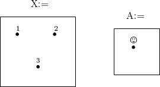 Why? We are trying to count the number of functions X → A. Regardless of X and A, in order to give a function X → A one must answer the question, Where do I send x? several times, once for each element x ∈ X. Each element of X is sent to an element in A. For example, if X = {1, 2, 3}, then one asks three questions: Where do I send 1? Where do I send 2? Where do I send 3? When A has only one element, there is only one place to send each x. A function X → {☺} would be written 1 ↦ ☺, 2 ↦ ☺, 3 ↦ ☺. There is only one such function, so HomSet(X, {☺}) has one element. b. B = ∅ is the only possibility. 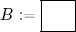 To give a function B → X one must answer the question, Where do I send b? for each b ∈ B. Because B has no elements, no questions must be answered in order to provide such a function. There is one way to answer all the necessary questions, because doing so is immediate (“vacuously satisfied”). It is like commanding John to “assign a letter grade to every person who is over 14 feet tall.” John is finished with his job the moment the command is given, and there is only one way for him to finish the job. So HomSet(∅, X) has one element. For any set X, we define the identity function on X, denoted to be the function such that for all x ∈ X, we have idX(x) = x. Definition 2.1.2.14 (Isomorphism). Let X and Y be sets. A function f : X → Y is called an isomorphism, denoted f : 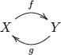 In this case we also say that f is invertible and that g is the inverse of f. If there exists an isomorphism Example 2.1.2.15. If X and Y are sets and f : X → Y is an isomorphism, then the analogue of Figure 2.2 will look like a perfect matching, more often called a one-to-one correspondence. That means that no two arrows will hit the same element of Y, and every element of Y will be in the image. For example, Figure 2.4 depicts an isomorphism Application 2.1.2.16. There is an isomorphism between the set NucDNA of nucleotides found in DNA and the set NucRNA of nucleotides found in RNA. Indeed, both sets have four elements, so there are 24 different isomorphisms. But only one is useful in biology. Before we say which one it is, let us say there is also an isomorphism NucDNA ≅ {A, C, G, T} and an isomorphism NucRNA ≅ {A, C, G, U}, and we will use the letters as abbreviations for the nucleotides. The convenient isomorphism (See also Application 5.1.2.21.) There is also an isomorphism Protein production can be modeled as a function from the set of 3-nucleotide sequences to the set of eukaryotic amino acids. However, it cannot be an isomorphism because there are 43 = 64 triplets of RNA nucleotides but only 21 eukaryotic amino acids. Exercise 2.1.2.17. Let n ∈ ℕ be a natural number, and let X be a set with exactly n elements. a. How many isomorphisms are there from X to itself? b. Does your formula from part (a) hold when n = 0? Proposition 2.1.2.18. The following facts hold about isomorphism. Proof. 1. The identity function idA: A → A is invertible; its inverse is idA because idA ○ idA = idA. 2. If f : A → B is invertible with inverse g : B → A, then g is an isomorphism with inverse f. 3. If f : A → B and f′ : B → C are each invertible with inverses g : B → A and g′: C → B, then the following calculations show that f′ ○ f is invertible with inverse g ○ g′: Exercise 2.1.2.19. Let A and B be these sets: 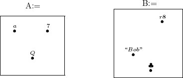 Note that the sets A and B are isomorphic. Suppose that f : B → {1, 2, 3, 4, 5} sends “Bob” to 1, sends ♣ to 3, and sends r8 to 4. Is there a canonical function A → {1, 2, 3, 4, 5} corresponding to f?4 Solution 2.1.2.19. No. There are a lot of choices, and none is any more reasonable than any other, i.e., none are canonical. (In fact, there are six choices; do you see why?) The point of this exercise is to illustrate that even if one knows that two sets are isomorphic, one cannot necessarily treat them as the same. To treat them as the same, one should have in hand a specified isomorphism g : Exercise 2.1.2.20. Find a set A such that for any set X, there is an isomorphism of sets Hint: A function A → X points each element of A to an element of X. When would there be the same number of ways to do that as there are elements of of X? Solution 2.1.2.20. Let A = {☺}. Then to point each element of A to an element of X, one must simply point ☺ to an element of X. The set of ways to do that can be put in one-to-one correspondence with the set of elements of X. For example, if X = {1, 2, 3}, then ☺ ↦ 3 is a function A → X representing the element 3 ∈ X. See Notation 2.1.2.9. Notation 2.1.2.21. For any natural number n ∈ ℕ, define a set We call n the numeral set of size n. So, in particular, 2 = {1, 2}, 1 = {1}, and 0 = ∅. Let A be any set. A function f : n → A can be written as a length n sequence We call this the sequence notation for f. Exercise 2.1.2.22. a. Let A = {a, b, c, d}. If f : 10 → A is given in sequence notation by (a, b, c, c, b, a, d, d, a, b), what is f(4)? b. Let s: 7 → ℕ be given by s(i) = i2. Write s in sequence notation. Solution 2.1.2.22. a. c b. (1, 4, 9, 16, 25, 36, 49) Definition 2.1.2.23 (Cardinality of finite sets). Let A be a set and n ∈ ℕ a natural number. We say that A has cardinality n, denoted if there exists an isomorphism of sets A ≅ n. If there exists some n ∈ ℕ such that A has cardinality n, then we say that A is finite. Otherwise, we say that A is infinite and write |A| ⩾ ∞. Exercise 2.1.2.24. a. Let A = {5, 6, 7}. What is |A|? b. What is |{1, 1, 2, 3, 5}|? c. What is |ℕ|? d. What is |{n ∈ ℕ | n ⩽ 5}|? We will see in Corollary 3.4.5.6 that for any m, n ∈ ℕ, there is an isomorphism m ≅ n if and only if m = n. So if we find that A has cardinality m and that A has cardinality n, then m = n. Proposition 2.1.2.25. Let A and B be finite sets. If there is an isomorphism of sets f : A → B, then the two sets have the same cardinality, |A| = |B|. Proof. If f : A → B is an isomorphism and B ≅ n, then A ≅ n because the composition of two isomorphisms is an isomorphism. At this point it is difficult to precisely define diagrams or commutative diagrams in general, but we can get a heuristic idea.5 Consider the following picture: 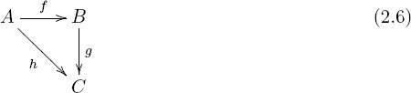 We say this is a diagram of sets if each of A, B, C is a set and each of f, g, h is a function. We say this diagram commutes if g ○ f = h. In this case we refer to it as a commutative triangle of sets, or, more generally, as a commutative diagram of sets. Application 2.2.1.1. In its most basic form, the central dogma of molecular biology is that DNA codes for RNA codes for protein. That is, there is a function from DNA triplets to RNA triplets and a function from RNA triplets to amino acids. But sometimes we just want to discuss the translation from DNA to amino acids, and this is the composite of the other two. The following commutative diagram is a picture of this fact 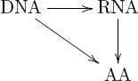 Consider the following picture: We say this is a diagram of sets if each of A, B, C, D is a set and each of f, g, h, i is a function. We say this diagram commutes if g ○ f = i ○ h. In this case we refer to it as a commutative square of sets. More generally, it is a commutative diagram of sets. Application 2.2.1.2. Given a physical system S, there may be two mathematical approaches f : S → A and g : S → B that can be applied to it. Either of those results in a prediction of the same sort, f′ : A → P and g′ : B → P. For example, in mechanics we can use either the Lagrangian approach or the Hamiltonian approach to predict future states. To say that the diagram 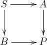 commutes would say that these approaches give the same result. Note that diagram (2.6) is considered to be the same diagram as each of the following: 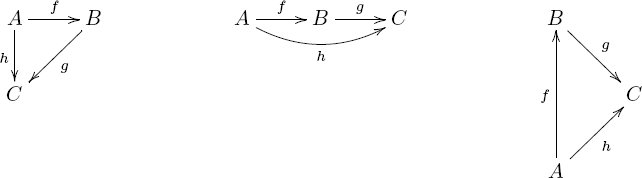 In all these we have h = g ○ f, or in diagrammatic order, h = f; g. In this book I ground the mathematical ideas in applications whenever possible. To that end I introduce ologs, which serve as a bridge between mathematics and various conceptual landscapes. The following material is taken from Spivak and Kent [43], an introduction to ologs. 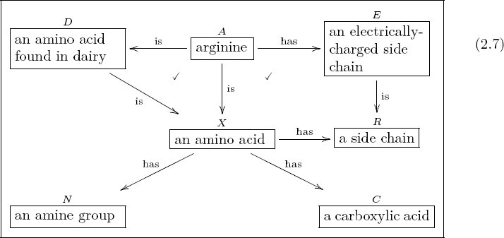 A type is an abstract concept, a distinction the author has made. Each type is represented as a box containing a singular indefinite noun phrase. Each of the following four boxes is a type: 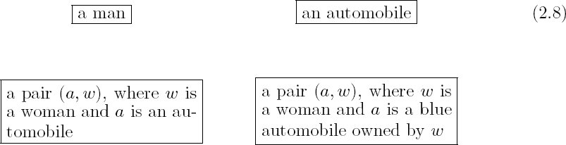 Each of the four boxes in (2.8) represents a type of thing, a whole class of things, and the label on that box is what one should call each example of that class. Thus ⌜a man⌝ does not represent a single man but the set of men, each example of which is called “a man.” Similarly, the bottom right box represents an abstract type of thing, which probably has more than a million examples, but the label on the box indicates the common name for each such example. Typographical problems emerge when writing a text box in a line of text, e.g., the text box a man seems out of place, and the more in-line text boxes there are, the worse it gets. To remedy this, I denote types that occur in a line of text with corner symbols; e.g., I write ⌜a man⌝ instead of a man. Many types have compound structures, i.e., they are composed of smaller units. Examples include 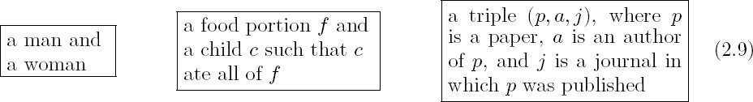 It is good practice to declare the variables in a compound type, as in the last two cases of (2.9). In other words, it is preferable to replace the first box in (2.9) with something like so that the variables (m, w) are clear. Rules of good practice 2.3.1.2. A type is presented as a text box. The text in that box should (i) begin with the word a or an; (ii) refer to a distinction made and recognizable by the olog’s author; (iii) refer to a distinction for which instances can be documented; (iv) be the common name that each instance of that distinction can be called; and (v) declare all variables in a compound structure. The first, second, third, and fourth rules ensure that the class of things represented by each box appears to the author to be a well defined set, and that the class is appropriately named. The fifth rule encourages good readability of arrows (see Section 2.3.2). I do not always follow the rules of good practice throughout this book. I think of these rules being as followed “in the background,” but I have nicknamed various boxes. So ⌜Steve⌝ may stand as a nickname for ⌜a thing classified as Steve⌝ and ⌜arginine⌝ as a nickname for ⌜a molecule of arginine⌝. However, one should always be able to rename each type according to the rules of good practice. An aspect of a thing x is a way of viewing it, a particular way in which x can be regarded or measured. For example, a woman can be regarded as a person; hence “being a person” is an aspect of a woman. A molecule has a molecular mass (say in daltons), so “having a molecular mass” is an aspect of a molecule. In other words, when it comes to ologs, the word aspect simply means function. The domain A of the function f : A → B is the thing we are measuring, and the codomain is the set of possible answers or results of the measurement. 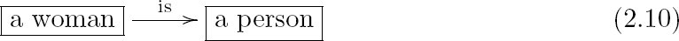 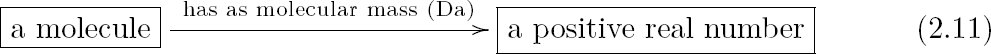 So for the arrow in (2.10), the domain is the set of women (a set with perhaps 3 billion elements); the codomain is the set of persons (a set with perhaps 6 billion elements). We can imagine drawing an arrow from each dot in the “woman” set to a unique dot in the “person” set, just as in Figure 2.2. No woman points to two different people nor to zero people—each woman is exactly one person—so the rules for a function are satisfied. Let us now concentrate briefly on the arrow in (2.11). The domain is the set of molecules, the codomain is the set ℝ>0 of positive real numbers. We can imagine drawing an arrow from each dot in the “molecule” set to a single dot in the “positive real number” set. No molecule points to two different masses, nor can a molecule have no mass: each molecule has exactly one mass. Note, however, that two different molecules can point to the same mass. To be valid an aspect must be a functional relationship. Arrows may on their face appear to be aspects, but on closer inspection they are not functional (and hence not valid as aspects). Consider the following two arrows: 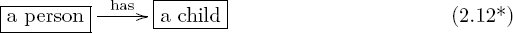 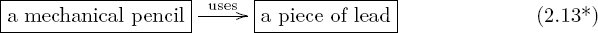 A person may have no children or may have more than one child, so the first arrow is invalid: it is not a function. Similarly, if one drew an arrow from each mechanical pencil to each piece of lead it uses, one would not have a function. Warning 2.3.2.2. The author of an olog has a worldview, some fragment of which is captured in the olog. When person A examines the olog of person B, person A may or may not agree with it. For example, person B may have the following olog 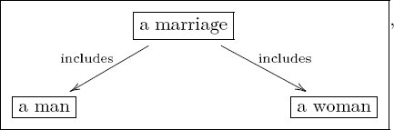 which associates to each marriage a man and a woman. Person A may take the position that some marriages involve two men or two women and thus see B’s olog as wrong. Such disputes are not “problems” with either A’s olog or B’s olog; they are discrepancies between worldviews. Hence, a reader R may see an olog in this book and notice a discrepancy between R’s worldview and my own, but this is not a problem with the olog. Rules are enforced to ensure that an olog is structurally sound, not to ensure that it “correctly reflects reality,” since worldviews can differ. Consider the aspect Remark 2.3.2.3. In keeping with Warning 2.3.2.2, the arrows in (2.12*) and (2.13*) may not be wrong but simply reflect that the author has an idiosyncratic worldview or vocabulary. Maybe the author believes that every mechanical pencil uses exactly one piece of lead. If this is so, then Each arrow (aspect) 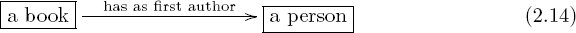 is read “a book has as first author a person.” Remark 2.3.2.5. Note that the map in (2.14) is a valid aspect, but a similarly benign-looking map Sometimes the label on an arrow can be shortened or dropped altogether if it is obvious from context (see Section 2.3.3). Here is a common example from the way I write ologs. 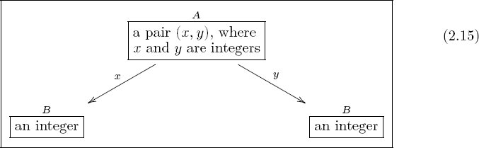 Neither arrow is readable by the preceding protocol (e.g., “a pair (x, y), where x and y are integers x an integer” is not an English sentence), and yet it is clear what each map means. For example, given (8, 11) in A, arrow x would yield 8 and arrow y would yield 11. The label x can be thought of as a nickname for the full name “yields as the value of x,” and similarly for y. I do not generally use the full name, so as not to clutter the olog. One can also read paths through an olog by inserting the word which (or who) after each intermediate box. For example, olog (2.16) has two paths of length 3 (counting arrows in a chain): 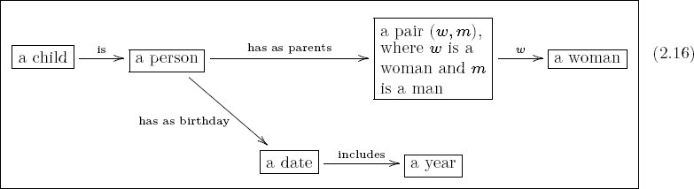 The top path is read “a child is a person, who has as parents a pair (w, m), where w is a woman and m is a man, which yields, as the value of w, a woman.” The reader should read and understand the content of the bottom path, which associates to every child a year. There are many relationships that are not functional, and these cannot be considered aspects. Often the word has indicates a relationship—sometimes it is functional, as in What about 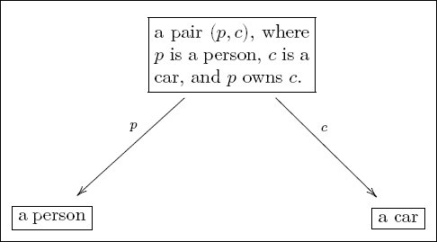 This setup will ensure that everything is properly organized. In general, relationships can involve more than two types, and in olog form looks like this: 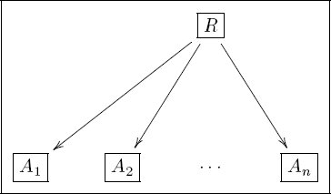 For example, 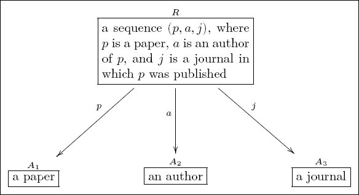 Exercise 2.3.2.7. On page 25, the arrow in (2.12*) was indicated as an invalid aspect: 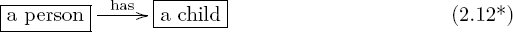 Create a valid olog that captures the parent-child relationship; your olog should still have boxes ⌜a person⌝ and ⌜a child⌝ but may have an additional box. Rules of good practice 2.3.2.8. An aspect is presented as a labeled arrow pointing from a source box to a target box. The arrow label text should (i) begin with a verb; (ii) yield an English sentence, when the source box text followed by the arrow text followed by the target box text is read; (iii) refer to a functional relationship: each instance of the source type should give rise to a specific instance of the target type; (iv) constitute a useful description of that functional relationship. In this section I discuss facts, by which I mean path equivalences in an olog. It is the notion of path equivalences that makes category theory so powerful. A path in an olog is a head-to-tail sequence of arrows. That is, any path starts at some box B0, then follows an arrow emanating from B0 (moving in the appropriate direction), at which point it lands at another box B1, then follows any arrow emanating from B1, and so on, eventually landing at a box Bn and stopping there. The number of arrows is the length of the path. So a path of length 1 is just an arrow, and a path of length 0 is just a box. We call B0 the source and Bn the target of the path. Given an olog, its author may want to declare that two paths are equivalent. For example, consider the two paths from A to C in the olog 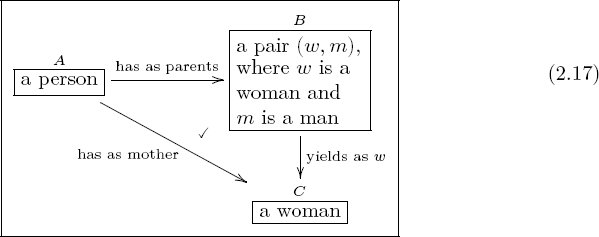 We know as English speakers that a woman parent is called a mother, so these two paths A → C should be equivalent. A mathematical way to say this is that the triangle in olog (2.17) commutes. That is, path equivalences are simply commutative diagrams, as in Section 2.2. In the preceding example we concisely say “a woman parent is equivalent to a mother.” We declare this by defining the diagonal map in (2.17) to be the composition of the horizontal map and the vertical map. I generally prefer to indicate a commutative diagram by drawing a check mark, ✓, in the region bounded by the two paths, as in olog (2.17). Sometimes, however, one cannot do this unambiguously on the two-dimensional page. In such a case I indicate the commutative diagram (fact) by writing an equation. For example, to say that the diagram commutes, we could either draw a check mark inside the square or write the equation above it.6 Either way, it means that starting from A, “doing f, then g” is equivalent to “doing h, then i.” Here is another example: 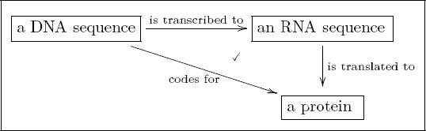 Note how this diagram gives us the established terminology for the various ways in which DNA, RNA, and protein are related in this context. Exercise 2.3.3.1. Create an olog for human nuclear biological families that includes the concepts of person, man, woman, parent, father, mother, and child. Make sure to label all the arrows and that each arrow indicates a valid aspect in the sense of Section 2.3.2.1. Indicate with check marks (✓) the diagrams that are intended to commute. If the 2-dimensionality of the page prevents a check mark from being unambiguous, indicate the intended commutativity with an equation. Solution 2.3.3.1. 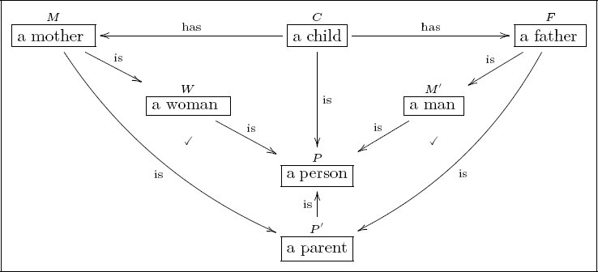 Note that neither of the two triangles from child to person commute. To say that they did commute would be to say that “a child and its mother are the same person” and that “a child and its father are the same person.” Example 2.3.3.2 (Noncommuting diagram). In my conception of the world, the following diagram does not commute: 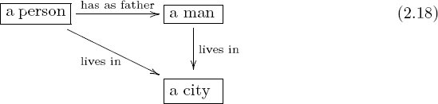 The noncommutativity of diagram (2.18) does not imply that no person lives in the same city as his or her father. Rather it implies that it is not the case that every person lives in the same city as his or her father. Exercise 2.3.3.3. Create an olog about a scientific subject, preferably one you think about often. The olog should have at least five boxes, five arrows, and one commutative diagram. Every fact consists of two paths, say, P and Q, that are to be declared equivalent. The paths P and Q will necessarily have the same source, say, s, and target, say, t, but their lengths may be different, say, m and n respectively.7 We draw these paths as Every part ℓ of an olog (i.e., every box and every arrow) has an associated English phrase, which we write as 〈〈ℓ〉〉. Using a dummy variable x, we can convert a fact into English too. The following general formula may be a bit difficult to understand (see Example 2.3.3.5). The fact P ≃ Q from (2.19) can be Englished as follows: Example 2.3.3.5. Consider the olog 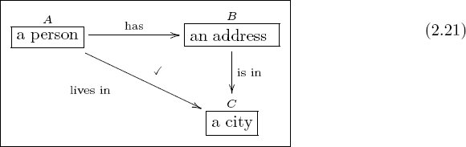 To put the fact that diagram (2.21) commutes into English, we first English the two paths: F = “a person has an address which is in a city” and G = “a person lives in a city.” The source of both is s = “a person” and the target of both is t = “a city.” Write: Given x, a person, consider the following. We know that x is a person, who has an address, which is in a city, that we call P(x). We also know that x is a person, who lives in a city that we call Q(x). Fact: Whenever x is a person, we will have P(x) = Q(x). More concisely, one reads olog 2.21 as A person x has an address, which is in a city, and this is the city x lives in. Exercise 2.3.3.6. This olog was taken from Spivak [38]. 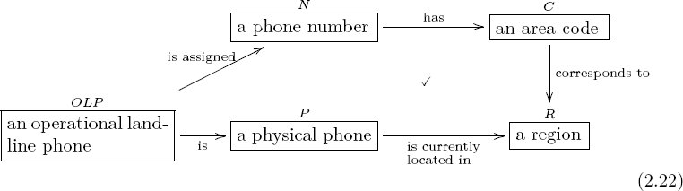 It says that a landline phone is physically located in the region to which its phone number is assigned. Translate this fact into English using the formula from (2.20). Exercise 2.3.3.7. In olog (2.22), suppose that the box ⌜an operational landline phone⌝ is replaced with the box ⌜an operational cell phone⌝. Would the diagram still commute? This section discusses a specific kind of fact, generated by any aspect. Recall that every function has an image (2.3), meaning the subset of elements in the codomain that are “hit” by the function. For example, the function f : ℤ → ℤ given by f(x) = 2 * x: ℤ → ℤ has as image the set of all even numbers. Similarly, the set of mothers arises as the image of the “has as mother” function: 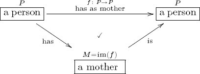 Exercise 2.3.3.9. For each of the following types, write a function for which it is the image, or write “not clearly useful as an image type.” a. ⌜a book⌝ b. ⌜a material that has been fabricated by a working process of type T ⌝ c. ⌜a bicycle owner⌝ d. ⌜a child⌝ e. ⌜a used book⌝ f. ⌜a primary residence⌝ __________________ 1Note that the symbol x′, read “x-prime,” has nothing to do with calculus or derivatives. It is simply notation used to name a symbol that is somehow like x. This suggestion of kinship between x and x′ is meant only as an aid for human cognition, not as part of the mathematics. 2This kind of arrow, ↦, is read “maps to.” A function f : X → Y means a rule for assigning to each element x ∈ X an element f(x) ∈ Y. We say that “x maps to f(x)” and write x ↦f(x). 3The notation HomSet(−, −) will make more sense later, when it is seen in a larger context. See especially Section 5.1. 4Canonical, as used here, means something like “best choice,” a choice that stands out as the only reasonable one. 5Commutative diagrams are precisely defined in Section 6.1.2. 6We defined function composition in Section 2.1.2, but here we are using a different notation. There we used classical order, and our path equivalence would be written g ○ f = i ○ h. As discussed in Remark 2.1.2.11, category theorists and others often prefer the diagrammatic order for writing compositions, which is f; g = h; i. For ologs, we roughly follow the latter because it makes for better English sentences, and for the same reason, we add the source object to the equation, writing A[f, g] ≃ A[h, i]. 7If the source equals the target, s = t, then it is possible to have m = 0 or n = 0, and the ideas that follow still make sense.Chapter 2
The Category of Sets
2.1 Sets and functions
2.1.1 Sets
2.1.2 Functions
2.2 Commutative diagrams

2.3 Ologs
2.3.1 Types
2.3.1.1 Types with compound structures

2.3.2 Aspects
2.3.2.1 Invalid aspects
2.3.2.4 Reading aspects and paths as English phrases
2.3.2.6 Converting nonfunctional relationships to aspects
2.3.3 Facts

2.3.3.4 A formula for writing facts as English
2.3.3.8 Images